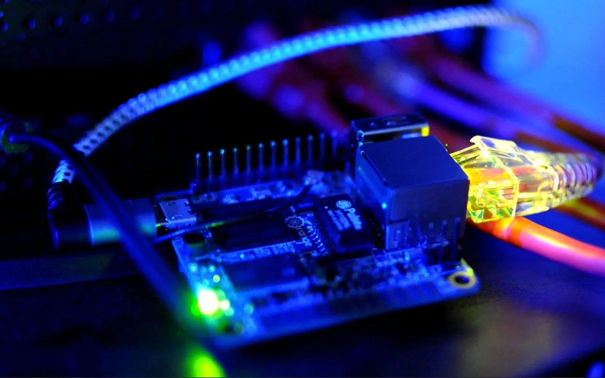
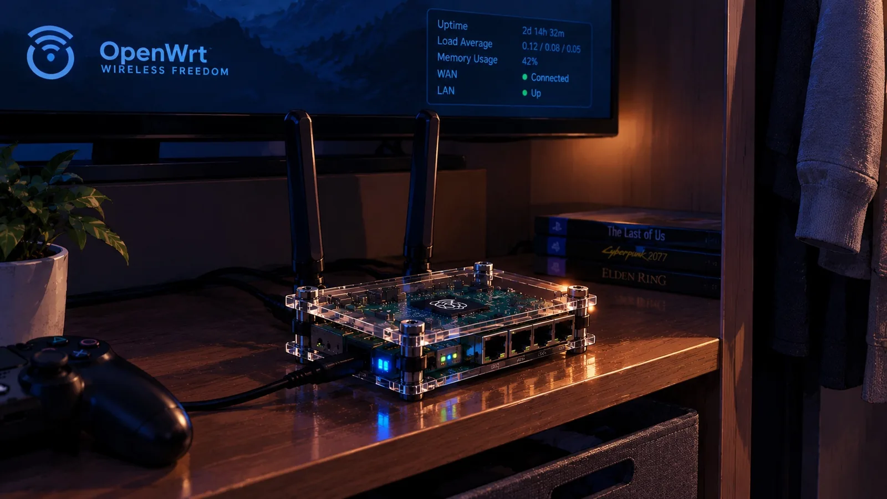
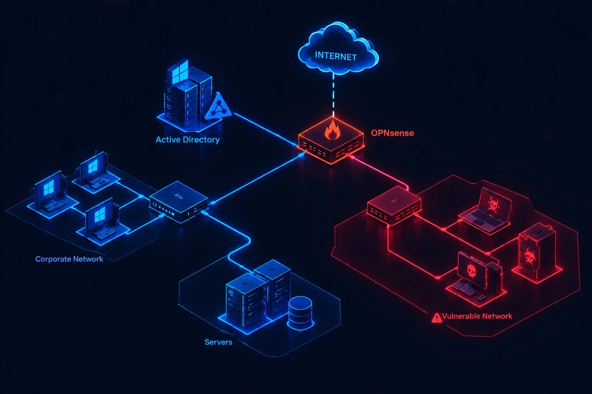
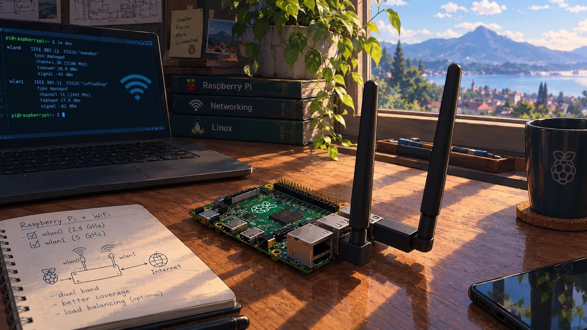
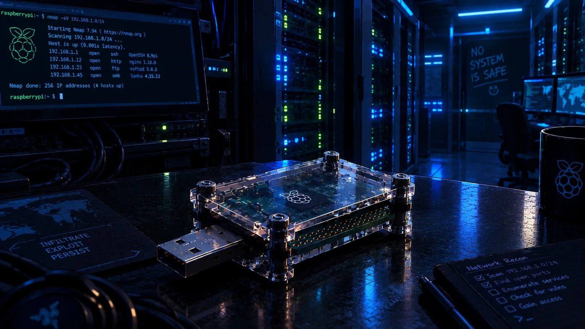

§ 03 · Writing
Writing & Walkthroughs

Don’t Trust the Bus - BitLocker Key Extraction
This post explains how BitLocker keys can be extracted from memory under certain conditions. Learn the techniques and mitigation steps...
Read ↗
Plug, Bridge, Persist - A Network Implant That Slips Past 802.1X
A plantable implant that bridges a host and the corporate socket, survives 802.1X/NAC, and stays reachable through Tailscale, with optional LTE.
Read ↗
Turning a Budget Router into a Tripwire
OpenWRT on an ASUS RT-AX53U: a hardened firewall plus a socat honeypot with email alerts and automatic lockdown.
Read ↗
Vulnerable Active Directory Lab
A deliberately vulnerable AD lab segmented by OPNSense and monitored with Security Onion, with per-machine build notes.
Read ↗
Pi-Fi Arsenal - Raspberry Pi for Wi-Fi Hacking
A Raspberry Pi 4B turned into a powerbank-powered Wi-Fi pentesting rig with pre-configured attack interfaces and tooling.
Read ↗
Pocket-Sized Payloads - P4wnP1: A Wi-Fi-Armed USB Attack Tool
A pocket-sized USB HID attack platform: P4wnP1 A.L.O.A. on a Raspberry Pi Zero W, armed through its own Wi-Fi.
Read ↗